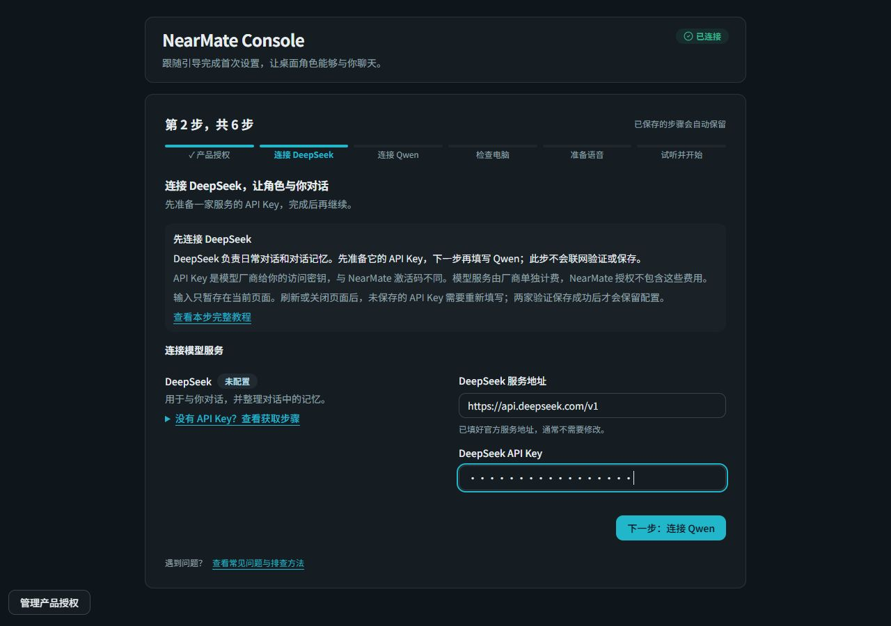
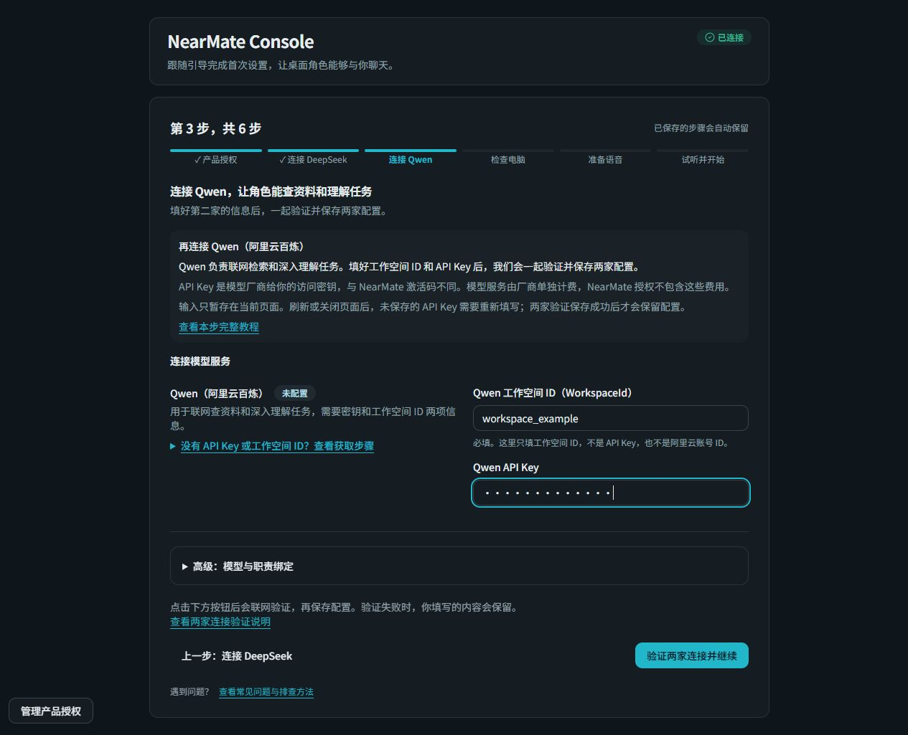
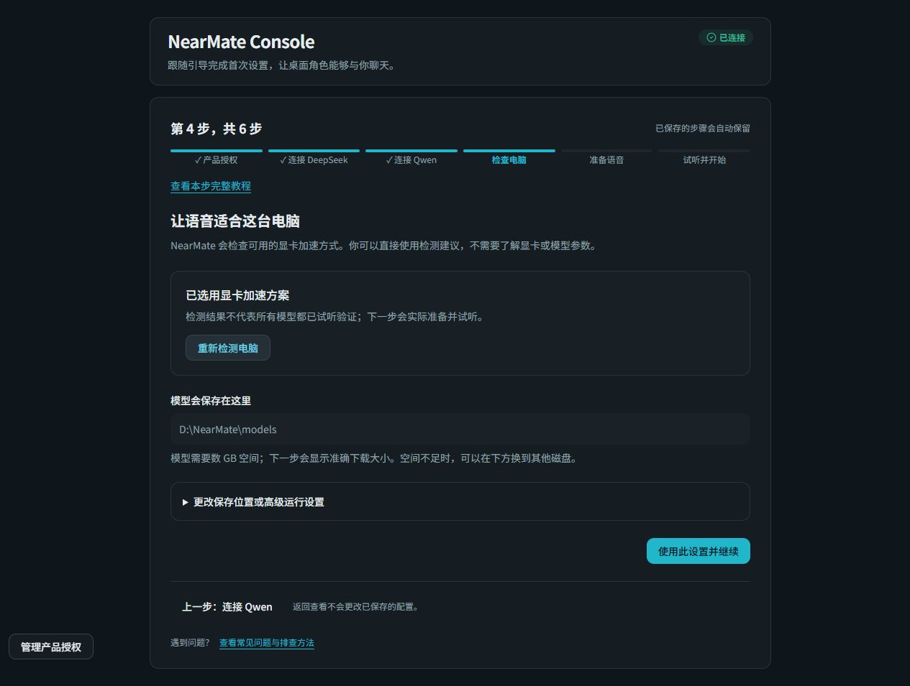

第一次打开 NearMate
按六步向导完成设置
依次取得产品授权、连接两家模型服务，再准备语音。全部完成后，桌面角色才会开始正常聊天。
适用界面：本文六步流程对应新版首次引导。如果旧版显示“连接 AI”，DeepSeek 和 Qwen 在同一页填写，并统一验证保存；后续检查电脑、准备语音和试听流程一致。所需凭据与产品授权要求不变，请以实际安装界面为准。
1. 激活 NearMate
第一次打开软件，控制台会先显示产品授权页面。
- 想先体验：查看页面上的试用状态，在可领取时点击申请试用。
- 购买正式授权：点击购买授权 Key，收到 NearMate 激活码后回到产品授权页面填写并激活。
- 已有激活码：将 NearMate 激活码填入对应输入框，提交激活。
领取试用成功后，会连续计时 24 小时；安装配置也占用这段时间。没有名额、尚未开放或设备不符合资格时，以页面说明为准。试用的每次新启动会话需要联网。
激活成功后，软件可能还在准备运行环境。等待当前准备阶段结束，再继续填写配置。无法领取试用时查看这里。
这里的激活码属于 NearMate。接下来填写的模型 API Key 属于模型厂商，两者用途不同。试用不提供 DeepSeek 或 Qwen 的免费调用额度。
2. 连接 DeepSeek
DeepSeek 负责当前角色的日常对话和近期对话记忆。你需要取得它的 API Key。
- 打开DeepSeek 开放平台，注册或登录账号。
- 在平台创建 API Key，并复制完整内容。检查账户是否已具备可用额度。
- 回到 NearMate，将 Key 粘贴到 DeepSeek API Key 输入框。
- 使用默认官方服务地址即可；点击下一步，继续配置 Qwen。
API Key 相当于使用模型服务的凭据。不要把它发到交流群、截图或公开反馈中；如果平台只显示一次，请按平台说明妥善保管。
这一页的“下一步”只让你继续填写。DeepSeek 与 Qwen 会在后面的“验证两家连接并继续”中一起检查和保存。返回上一步可以继续修改尚未提交的内容。

3. 连接 Qwen（阿里云百炼）
Qwen 用于联网检索和深入理解任务。这里需要两项：工作空间 ID（WorkspaceId）和API Key。
- 打开阿里云百炼控制台，登录并按平台提示开通模型服务。
- 选择北京地域，进入你使用的工作空间。在工作空间管理中复制 WorkspaceId。
- 在对应地域和工作空间创建或取得 API Key，确认它具有所需模型的调用权限及可用额度。
- 回到 NearMate，将 WorkspaceId 和 API Key 分别粘贴到对应输入框。
WorkspaceId 用来确定请求发往哪个工作空间。它不是 API Key，也不是阿里云账号 ID。请使用与 Key 配套的工作空间。
厂商后台的菜单名称可能调整，以平台当前显示为准；NearMate 这一页只要求填写上面的两个值。

两家都填好后，统一验证并保存
在 Qwen 步骤点击“验证两家连接并继续”。NearMate 会一起检查已填写的 DeepSeek 与 Qwen 服务；检查通过后才保存，并进入“检查电脑”。
- 检查通过：继续下一步，不必再手动保存另一家服务。
- 检查失败：阅读页面上的原因，确认网络、Key、工作空间和厂商账户状态。可以返回 DeepSeek 或留在 Qwen 修改，然后重新验证。
- 之前已经保存过：已保存的 API Key 可以留空，继续使用原凭据。只有填写新 Key 才会替换它。
未保存的 API Key 只暂存在当前页面，返回上一步时会保留；刷新或关闭页面后需要重新填写。只有两家验证并保存成功后，配置才会保留。
验证会访问模型厂商，可能产生少量 API 用量。它说明当前服务可以连接，不代表任何后续任务都一定成功。
模型与职责的详细选项放在高级设置中。第一次使用保持向导默认项即可；遇到明确提示需要调整时，再根据页面原因处理。连接失败的处理方法。
4. 检查电脑
点击检查，NearMate 会检测这台电脑可用的语音运行方式。大多数情况下直接采用检测建议，不需要了解显卡参数。
- 等待检查完成，阅读页面显示的建议。
- 确认模型保存位置。空间不足时，选择其它有足够容量的磁盘；模型目录必须放在程序安装目录之外。
- 点击“使用此设置并继续”，确认本次选择。
推荐结果需要你确认才会保存。高级设置可以查看具体执行方式和目录；如果显卡方案不可用，也可以查看 CPU 方案。CPU 运行速度受设备性能影响。

5. 准备语音
选择一款语音模型。页面会显示名称、下载大小和可用状态；选择后开始准备。
- 下载：显示已下载大小和下载进度；保持网络可用并预留足够空间。
- 校验与加载：检查模型文件并将模型载入本机，这时不按下载百分比表示进度。
- 准备当前角色音色：根据角色卡的语音素材生成可试听的音色。
- 等待试听就绪：准备完成并释放临时资源后，进入试听步骤。
第一次准备可能需要较长时间。下载中断、取消或关闭程序后，可重新打开控制台继续；已验证可用的缓存会被复用。选择模型前，先看清页面显示的容量和说明。下载或准备失败时查看这里。
6. 试听并开始
- 点击播放，听完整段当前角色语音。
- 确认有声音、声音符合预期，而且播放没有报错。
- 点击确认，等待软件完成运行准备。
试听需要完整播放结束后才能确认；声音不正常时，先检查音量和输出设备，再播放。换了模型或角色语音素材以后，还需要重新准备和试听，不能直接沿用旧确认。
向导显示设置完成后，把鼠标移到桌面角色上，点击旁边的聊天气泡图标，打开聊天窗口。输入“你好，介绍一下你能怎么陪我工作”，发送第一条消息。
先完成一件小事：问一句“我应该怎么开始使用你？”收到回答后，再试着把一张图片或一份短材料拖进聊天输入区，请当前角色帮你解释。
控制台用于调整设置，日常交流在聊天窗口里进行。后台工作和天气都是选配功能，开始聊天前不必配置。